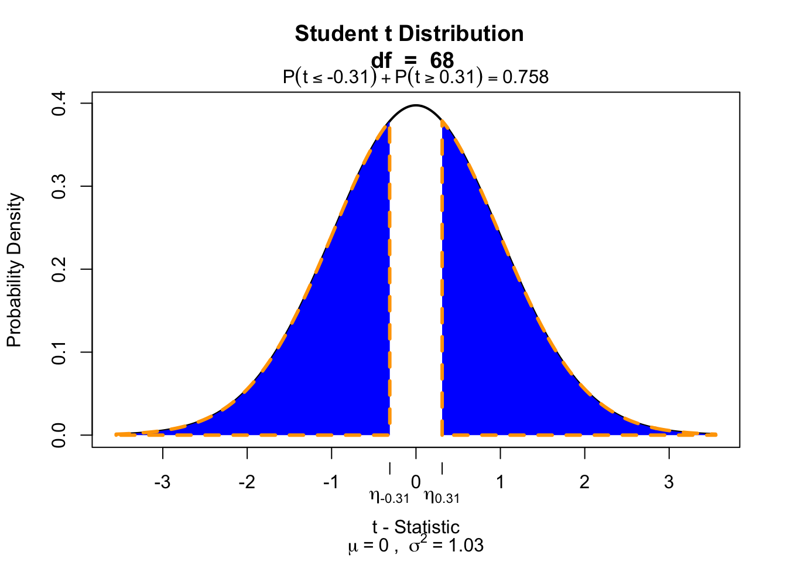

set.seed(23)
classPosition <- sample(c("front", "back"), dim(data)[1], replace = TRUE)Independent-samples t-test
Compare 2 independent samples
Independent-samples t-test
In the independent-samples t-test the mean of both independent samples is calculated and the difference of these \((\bar{X}_1 - \bar{X}_2)\) means is tested against the null hypothesis where \(\mu = 0\).
\[t_{n_1 + n_2 -2} = \frac{(\bar{X}_1 - \bar{X}_2) - \mu}{{SE}_p}\] Where \(n_1\) and \(n_2\) are the number of cases in each group and \(SE_p\) is the pooled standard error.
Hypothesis
\[\begin{aligned} H_0 &: t = 0 = \mu_t \\ H_A &: t \neq 0 \\ H_A &: t > 0 \\ H_A &: t < 0 \\ \end{aligned}\]Data structure
| index | k | outcome |
|---|---|---|
| 1 | 1 | x |
| 2 | 1 | x |
| 3 | 2 | x |
| 4 | 2 | x |
Where \(k\) is the level of the categorical predictor variable and \(x\) is the value of the outcome/dependent variable.
Additional assumption
Specific for independent sample \(t\)-test.
- Equality of variance
- \(H_0\) : Variance \(=\) equal (\(p\) > .05)
- \(H_A\) : Variance \(\neq\) equal (\(p\) < .05)
Example
We are going to use the IQ estimates we collected. You had to guess the IQ of the one sitting next to you and your own IQ. But we are going to add class position to the data set. We did not register this so we are going to simulate some positions.
The data
Calculate means
ownIQfront <- subset(data, classPosition == "front", select = ownIQ)$ownIQ
ownIQback <- subset(data, classPosition == "back", select = ownIQ)$ownIQ
ownIQfront.mean <- mean(ownIQfront, na.rm = TRUE)
ownIQback.mean <- mean(ownIQback, na.rm = TRUE)
rbind(ownIQfront.mean, ownIQback.mean) [,1]
ownIQfront.mean 118.6053
ownIQback.mean 117.5161Calculate variance
ownIQfront.var <- var(ownIQfront, na.rm = TRUE)
ownIQback.var <- var(ownIQback, na.rm = TRUE)
print(rbind(ownIQfront.var, ownIQback.var)) [,1]
ownIQfront.var 201.1643
ownIQback.var 234.7914ownIQfront.n <- length(ownIQfront)
ownIQback.n <- length(ownIQback)
n <- ownIQfront.n + ownIQback.n
print(rbind(ownIQfront.n, ownIQback.n)) [,1]
ownIQfront.n 38
ownIQback.n 31Calculate t-value
\[t_{n_1 + n_2 -2} = \frac{(\bar{X}_1 - \bar{X}_2) - \mu}{{SE}_p}\]
Where \({SE}_p\) is the pooled standard error.
\[{SE}_p = \sqrt{\frac{S^2_p}{n_1}+\frac{S^2_p}{n_2}}\]
And \(S^2_p\) is the pooled variance.
\[S^2_p = \frac{(n_1-1)s^2_1+(n_2-1)s^2_2}{n_1+n_2-2}\]
Where \(s^2\) is the variance and \(n\) the sample size.
Calculate pooled variance
\[S^2_p = \frac{(n_1-1)s^2_1+(n_2-1)s^2_2}{n_1+n_2-2}\]
df <- ownIQfront.n + ownIQback.n - 2
pooledVar <- ( (ownIQfront.n-1)*ownIQfront.var + (ownIQback.n-1)*ownIQback.var ) / df
df[1] 67pooledVar[1] 216.2212Calculate pooled SE
\[ {SE}_p = \sqrt{\frac{S^2_p}{n_1}+\frac{S^2_p}{n_2}} \]
sePooled <- sqrt( ((pooledVar/ownIQfront.n) + (pooledVar/ownIQback.n)) )
sePooled[1] 3.558779Calculate t-value
\[t_{n_1 + n_2 -2} = \frac{(\bar{X}_1 - \bar{X}_2) - \mu}{{SE}_p}\]
tStat <- ( ownIQfront.mean - ownIQback.mean ) / sePooled
tStat[1] 0.3060415Test for significance
Two tailed
if(!"visualize" %in% installed.packages()) { install.packages("visualize") }
library("visualize")
if (df <= 3) df <- df + 5 # cheat to be able to build slides..
if (is.na(tStat)) tStat <- 1 # cheat to be able to build slides..
visualize.t(c(-round(tStat, 2), round(tStat, 2)), df+1, section="tails")
Effect-size d
\[r = \frac{2t}{\sqrt{n_1 + n_2}}\]
d <- 2*tStat / sqrt(n)
d[1] 0.07368613Effect-size r
\[r = \sqrt{\frac{t^2}{t^2 + \text{df}}}\]
r <- sqrt(tStat^2/(tStat^2 + df))
r[1] 0.03736281But what about equal variances?
There exist different hypothesis tests for this - the most used is Levene’s test:
if(!"car" %in% installed.packages()) { install.packages("car") }
library("car")
leveneTest(y = ownIQ, group = classPosition)Levene's Test for Homogeneity of Variance (center = median)
Df F value Pr(>F)
group 1 0.0669 0.7966
67 But what about equal variances?
Warning
Levene’s test (and other significance tests like it, such as Shapiro for normality) are heavily influenced by sample size, so a significant test result does not necessarily mean that you have a problem. A more pragmatic rule of thumb is to look at the ratio of variances - a ratio greater than 2 is problematic. Additionally, Welch test is a version of the \(t\)-test that handles unequal variances better.
The difference only matters when \(n_A \neq n_B\)!
meanA <- 50
meanB <- 55
sdA <- 5
sdB <- 10
nA <- 20
nB <- 20
seA <- sdA / sqrt(nA)
seB <- sdB / sqrt(nB)
tStatWelch <- (meanA - meanB) / sqrt((sdA^2 / nA) + (sdB^2 / nB))
pooledS <- sqrt(((nA - 1) * sdA^2 + (nA - 1) * sdB^2) / (nA + nB - 2))
tStatStudent <- (meanA - meanB) / (pooledS * sqrt(1/nA + 1/nA))
tStatStudent[1] -2tStatWelch[1] -2Normality
- Assess using a plot (Q-Q plot)
- Points should be along the diagonal
- Not exact
- Test using hypothesis test (Shapiro-Wilk)
- \(p < \alpha \rightarrow\) assumption violated
- Same caution as Levene’s test (see also Jane Superbrain Box 6.7)
- Plus caution as with any p-value (black-and-white decision making)
- Becomes less important as \(n\) grows (+- \(n = 30\))

Handling Assumption violations
Warning
Assumption violations affect the shape of the sampling distribution and mess up the type 1/2 error rates
- Unequal variances?
- Welch \(t\)-test
- Non-normality?
- Use nonparametric test (Chapter 15)
- Bootstrapping